Estatísticas do Servidor Web de marcros.com.br
Estatísticas do Servidor Web de marcros.com.br
Começo do programa em Qua-30-Jun-2021 23:05.
Análise de pedidos desde Ter-15-Jun-2021 20:48 até Qua-30-Jun-2021 20:52 (15,00 dias).
Estatísticas do Servidor Web de marcros.com.brComeço do programa em Qua-30-Jun-2021 23:05.
Análise de pedidos desde Ter-15-Jun-2021 20:48 até Qua-30-Jun-2021 20:52 (15,00 dias).
(Ir a: Início | Sumário Geral | Relatório Mensal | Resumo Diário | Resumo Horário | Relatório de Domínios | Relatório de organizações | Relatório de referência redireccionada | Relatório de referência falhada | Relatório do sítio de referência | Relatório de Leitores | Resumo de Leitores | Relatório de Sistemas Operativos | Relatório de Códigos de Estado | Relatório de Tamanho de Ficheiro | Relatório de Tipos de Ficheiro | Relatório de Directorias | Relatório de Pedidos)
Os valores entre parêntesis referem-se aos 7 dias até 30-Jun-2021 23:05.
Pedidos atendidos: 604 (134)
Número médio de pedidos atendidos por dia: 40 (19)
Pedidos de páginas atendidos: 117 (51)
Número médio de pedidos de páginas atendidos por dia: 7 (7)
Pedidos não atendidos: 454 (2)
Pedidos redirigidos: 65 (0)
Ficheiros diferentes solicitados: 60 (9)
Servidores diferentes atendidos: 104 (10)
Tráfego total: 16,20 megabytes (3,90 megabytes)
Tráfego médio transferido por dia: 1,08 megabytes (570,41 kilobytes)
(Ir a: Início | Sumário Geral | Relatório Mensal | Resumo Diário | Resumo Horário | Relatório de Domínios | Relatório de organizações | Relatório de referência redireccionada | Relatório de referência falhada | Relatório do sítio de referência | Relatório de Leitores | Resumo de Leitores | Relatório de Sistemas Operativos | Relatório de Códigos de Estado | Relatório de Tamanho de Ficheiro | Relatório de Tipos de Ficheiro | Relatório de Directorias | Relatório de Pedidos)
Cada unidade ( ) representa 3 pedidos de páginas ou fracção.
) representa 3 pedidos de páginas ou fracção.
| mês | N.ped | Pgs. | |
|---|---|---|---|
| Jun 2021 | 604 | 117 |    |
Mês mais movimentado: Jun 2021 (117 pedidos de páginas).
(Ir a: Início | Sumário Geral | Relatório Mensal | Resumo Diário | Resumo Horário | Relatório de Domínios | Relatório de organizações | Relatório de referência redireccionada | Relatório de referência falhada | Relatório do sítio de referência | Relatório de Leitores | Resumo de Leitores | Relatório de Sistemas Operativos | Relatório de Códigos de Estado | Relatório de Tamanho de Ficheiro | Relatório de Tipos de Ficheiro | Relatório de Directorias | Relatório de Pedidos)
Cada unidade () representa 1 pedido de uma página.
| dia | N.ped | Pgs. | |
|---|---|---|---|
| Dom | 15 | 11 |  |
| Seg | 13 | 10 | |
| Ter | 161 | 23 |  |
| Qua | 208 | 20 | |
| Qui | 104 | 17 | |
| Sex | 16 | 15 | |
| Sab | 87 | 21 | |
(Ir a: Início | Sumário Geral | Relatório Mensal | Resumo Diário | Resumo Horário | Relatório de Domínios | Relatório de organizações | Relatório de referência redireccionada | Relatório de referência falhada | Relatório do sítio de referência | Relatório de Leitores | Resumo de Leitores | Relatório de Sistemas Operativos | Relatório de Códigos de Estado | Relatório de Tamanho de Ficheiro | Relatório de Tipos de Ficheiro | Relatório de Directorias | Relatório de Pedidos)
Cada unidade () representa 1 pedido de uma página.
| h | N.ped | Pgs. | |
|---|---|---|---|
| 00 | 29 | 2 | |
| 01 | 0 | 0 | |
| 02 | 35 | 5 | |
| 03 | 10 | 4 | |
| 04 | 4 | 3 | |
| 05 | 0 | 0 | |
| 06 | 42 | 3 | |
| 07 | 55 | 1 | |
| 08 | 58 | 6 | |
| 09 | 10 | 5 | |
| 10 | 1 | 1 | |
| 11 | 26 | 10 | |
| 12 | 4 | 2 | |
| 13 | 28 | 2 | |
| 14 | 107 | 17 | |
| 15 | 2 | 2 | |
| 16 | 1 | 1 | |
| 17 | 19 | 5 | |
| 18 | 34 | 20 | |
| 19 | 30 | 7 | |
| 20 | 19 | 3 | |
| 21 | 39 | 9 | |
| 22 | 32 | 6 | |
| 23 | 19 | 3 | |
(Ir a: Início | Sumário Geral | Relatório Mensal | Resumo Diário | Resumo Horário | Relatório de Domínios | Relatório de organizações | Relatório de referência redireccionada | Relatório de referência falhada | Relatório do sítio de referência | Relatório de Leitores | Resumo de Leitores | Relatório de Sistemas Operativos | Relatório de Códigos de Estado | Relatório de Tamanho de Ficheiro | Relatório de Tipos de Ficheiro | Relatório de Directorias | Relatório de Pedidos)
Mostrando os domínios, ordenados por quantidade de tráfego.
| N.ped | %bytes | domínio |
|---|---|---|
| 604 | 100% | [endereço numérico não traduzido] |
(Ir a: Início | Sumário Geral | Relatório Mensal | Resumo Diário | Resumo Horário | Relatório de Domínios | Relatório de organizações | Relatório de referência redireccionada | Relatório de referência falhada | Relatório do sítio de referência | Relatório de Leitores | Resumo de Leitores | Relatório de Sistemas Operativos | Relatório de Códigos de Estado | Relatório de Tamanho de Ficheiro | Relatório de Tipos de Ficheiro | Relatório de Directorias | Relatório de Pedidos)
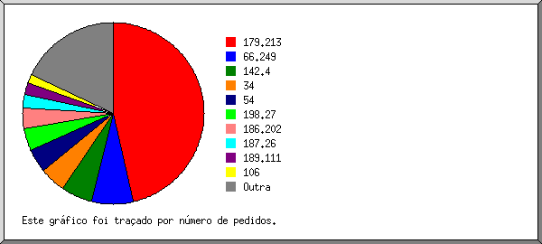
Mostrando as 20 primeiras organizações por número de pedidos, ordenadas por número de pedidos.
| N.ped | %bytes | organização |
|---|---|---|
| 312 | 67,28% | 179.213 |
| 46 | 10,29% | 66.249 |
| 40 | 0,02% | 142.4 |
| 28 | 5,82% | 198.27 |
| 23 | 3,21% | 54 |
| 20 | 1,23% | 34 |
| 17 | 1,22% | 186.202 |
| 17 | 0,29% | 187.26 |
| 15 | 2,43% | 189.111 |
| 11 | 0,58% | 106 |
| 8 | 2,10% | 201.49 |
| 7 | 0,91% | 207.46 |
| 6 | 0,30% | 104 |
| 5 | 0,29% | 52 |
| 4 | 1,13% | 171.13 |
| 4 | 0,29% | 92 |
| 3 | 0,22% | 35 |
| 3 | 0,08% | 18 |
| 3 | 91 | |
| 3 | 0,61% | 157.55 |
| 29 | 1,72% | [não listadas: 21 organizações] |
(Ir a: Início | Sumário Geral | Relatório Mensal | Resumo Diário | Resumo Horário | Relatório de Domínios | Relatório de organizações | Relatório de referência redireccionada | Relatório de referência falhada | Relatório do sítio de referência | Relatório de Leitores | Resumo de Leitores | Relatório de Sistemas Operativos | Relatório de Códigos de Estado | Relatório de Tamanho de Ficheiro | Relatório de Tipos de Ficheiro | Relatório de Directorias | Relatório de Pedidos)
Mostrando os URLs de referência, ordenados por número de pedidos redireccionados.
| N.ped | URL |
|---|---|
| 20 | http://marcros.com.br/contato |
(Ir a: Início | Sumário Geral | Relatório Mensal | Resumo Diário | Resumo Horário | Relatório de Domínios | Relatório de organizações | Relatório de referência redireccionada | Relatório de referência falhada | Relatório do sítio de referência | Relatório de Leitores | Resumo de Leitores | Relatório de Sistemas Operativos | Relatório de Códigos de Estado | Relatório de Tamanho de Ficheiro | Relatório de Tipos de Ficheiro | Relatório de Directorias | Relatório de Pedidos)
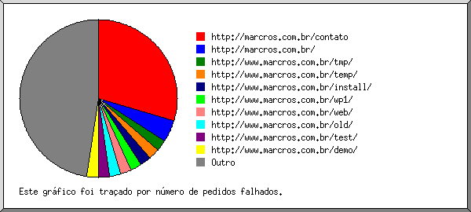
Mostrando os 30 primeiros URLs de referência por número de pedidos falhados, ordenados por número de pedidos falhados.
(Ir a: Início | Sumário Geral | Relatório Mensal | Resumo Diário | Resumo Horário | Relatório de Domínios | Relatório de organizações | Relatório de referência redireccionada | Relatório de referência falhada | Relatório do sítio de referência | Relatório de Leitores | Resumo de Leitores | Relatório de Sistemas Operativos | Relatório de Códigos de Estado | Relatório de Tamanho de Ficheiro | Relatório de Tipos de Ficheiro | Relatório de Directorias | Relatório de Pedidos)
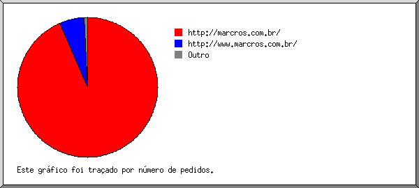
Mostrando os sítios de referência, ordenados por número de pedidos.
| N.ped | sítio |
|---|---|
| 369 | http://marcros.com.br/ |
| 19 | http://www.marcros.com.br/ |
| 3 | https://www.google.com/ |
(Ir a: Início | Sumário Geral | Relatório Mensal | Resumo Diário | Resumo Horário | Relatório de Domínios | Relatório de organizações | Relatório de referência redireccionada | Relatório de referência falhada | Relatório do sítio de referência | Relatório de Leitores | Resumo de Leitores | Relatório de Sistemas Operativos | Relatório de Códigos de Estado | Relatório de Tamanho de Ficheiro | Relatório de Tipos de Ficheiro | Relatório de Directorias | Relatório de Pedidos)
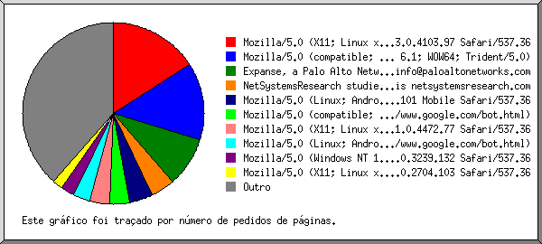
Mostrando os 40 primeiros leitores por número de pedidos de páginas, ordenados por número de pedidos de páginas.
| N.ped | Pgs. | Leitor |
|---|---|---|
| 27 | 18 | Mozilla/5.0 (X11; Linux x86_64) AppleWebKit/537.36 (KHTML, like Gecko) Chrome/83.0.4103.97 Safari/537.36 |
| 15 | 15 | Mozilla/5.0 (compatible; MSIE 9.0; Windows NT 6.1; WOW64; Trident/5.0) |
| 12 | 12 | Expanse, a Palo Alto Networks company, searches across the global IPv4 space multiple times per day to identify customers' presences on the Internet. If you would like to be excluded from our scans, please send IP addresses/domains to: scaninfo@paloaltonetworks.com |
| 32 | 7 | Mozilla/5.0 (Linux; Android 9; ASUS_X01BDA) AppleWebKit/537.36 (KHTML, like Gecko) Chrome/91.0.4472.101 Mobile Safari/537.36 |
| 229 | 5 | Mozilla/5.0 (X11; Linux x86_64) AppleWebKit/537.36 (KHTML, like Gecko) Chrome/91.0.4472.77 Safari/537.36 |
| 4 | 4 | NetSystemsResearch studies the availability of various services across the internet. Our website is netsystemsresearch.com |
| 19 | 4 | Mozilla/5.0 (Linux; Android 6.0.1; Nexus 5X Build/MMB29P) AppleWebKit/537.36 (KHTML, like Gecko) Chrome/91.0.4472.90 Mobile Safari/537.36 (compatible; Googlebot/2.1; +http://www.google.com/bot.html) |
| 8 | 4 | Mozilla/5.0 (compatible; Googlebot/2.1; +http://www.google.com/bot.html) |
| 3 | 3 | Mozilla/5.0 (Windows NT 6.1; rv:57.0) Gecko/20100101 Firefox/57.0 |
| 10 | 3 | Mozilla/5.0 (Macintosh; Intel Mac OS X 10_9_4) AppleWebKit/537.36 (KHTML, like Gecko) Chrome/36.0.1985.125 Safari/537.36 |
| 2 | 2 | Mozilla/4.0 (compatible; MSIE 7.0; AOL 9.0; Windows NT 6.1; WOW64; Trident/7.0; SLCC2; .NET CLR 2.0.50727; .NET CLR 3.5.30729; .NET CLR 3.0.30729; Media Center PC 6.0; HPNTDF; .NET4.0C; tb-gmx/2.6.7; .NET4.0E) |
| 3 | 2 | Mozilla/5.0 (Linux; Android 5.1.1; SM-J111F) AppleWebKit/537.36 (KHTML, like Gecko) Chrome/73.0.3683.90 Mobile Safari/537.36 |
| 2 | 2 | Mozilla/5.0 (X11; Linux x86_64) AppleWebKit/537.36 (KHTML, like Gecko) Chrome/51.0.2704.103 Safari/537.36 |
| 2 | 2 | Mozilla/5.0 (Macintosh; Intel Mac OS X 10_14_6) AppleWebKit/537.36 (KHTML, like Gecko) Chrome/76.0.3809.132 Safari/537.36 |
| 2 | 2 | Mozilla/5.0 (iPhone; CPU iPhone OS 9_3 like Mac OS X) AppleWebKit/601.1.46 (KHTML, like Gecko) Mobile/13E233 MicroMessenger/6.3.15 NetType/WIFI Language/zh_CN |
| 2 | 2 | Mozilla/5.0 (X11; Ubuntu; Linux x86_64; rv:82.0) Gecko/20100101 Firefox/82.0 |
| 1 | 1 | Mozilla/5.0 (Windows NT 6.1; WOW64) AppleWebKit/537.36 (KHTML, like Gecko) Chrome/36.0.1985.125 Safari/537.36 |
| 1 | 1 | Mozilla/4.0 (compatible; MSIE 8.0; Windows NT 5.1; Trident/4.0; GTB7.0; .NET CLR 2.0.50727; .NET CLR 3.0.4506.2152; .NET CLR 3.5.30729) |
| 9 | 1 | Mozilla/5.0 (X11; Linux x86_64) AppleWebKit/537.36 (KHTML, like Gecko) Chrome/91.0.4472.114 Safari/537.36 |
| 1 | 1 | Mozilla/5.0 (Macintosh; Intel Mac OS X 11_2_3) AppleWebKit/537.36 (KHTML, like Gecko) Chrome/89.0.4389.90 Safari/537.36 |
| 13 | 1 | Mozilla/5.0 (Windows NT 10.0; Win64; x64) AppleWebKit/537.36 (KHTML, like Gecko) Chrome/64.0.3282.140 Safari/537.36 Edge/17.17134 |
| 15 | 1 | Mozilla/5.0 (Windows NT 10.0; Win64; x64) AppleWebKit/537.36 (KHTML, like Gecko) Chrome/91.0.4472.106 Safari/537.36 |
| 1 | 1 | Mozilla/5.0 (Macintosh; Intel Mac OS X 10_9_0) AppleWebKit/537.36 (KHTML, like Gecko) Chrome/32.0.1664.3 Safari/537.36 |
| 2 | 1 | Mozilla/5.0 (compatible; YandexBot/3.0; +http://yandex.com/bots) |
| 2 | 1 | Mozilla/5.0 (Linux; Android 8.0.0; SM-G960F Build/R16NW) AppleWebKit/537.36 (KHTML, like Gecko) Chrome/62.0.3202.84 Mobile Safari/537.36 |
| 1 | 1 | Mozilla/5.0 (Windows NT 5.1) AppleWebKit/537.36 (KHTML, like Gecko) Chrome/35.0.3319.102 Safari/537.36 |
| 10 | 1 | Mozilla/5.0 (Linux; Android 10; Redmi Note 8) AppleWebKit/537.36 (KHTML, like Gecko) Chrome/91.0.4472.120 Mobile Safari/537.36 |
| 1 | 1 | Mozilla/5.0 (Windows NT 5.1) AppleWebKit/537.36 (KHTML, like Gecko) Chrome/35.0.2117.157 Safari/537.36 |
| 1 | 1 | Mozilla/5.0 (Macintosh; Intel Mac OS X 10_8_3) AppleWebKit/537.31 (KHTML, like Gecko) Chrome/26.0.1410.65 Safari/537.31 |
| 1 | 1 | Mozilla/5.0 (X11; Ubuntu; Linux x86_64; rv:58.0) Gecko/20100101 Firefox/58.0 |
| 4 | 1 | Mozilla/5.0 (Linux; Android 8.0; Pixel 2 Build/OPD3.170816.012) AppleWebKit/537.36 (KHTML, like Gecko) Chrome/75.0.3765.0 Mobile Safari/537.36 |
| 13 | 1 | Mozilla/5.0 (compatible; bingbot/2.0; +http://www.bing.com/bingbot.htm) |
| 1 | 1 | Mozilla/5.0 (Windows NT 6.1; WOW64; rv:7.0.1) Gecko/20100101 Firefox/7.0.1 |
| 1 | 1 | Mozilla/5.0 (Windows NT 6.4; WOW64) AppleWebKit/537.36 (KHTML, like Gecko) Chrome/41.0.2225.0 Safari/537.36 |
| 1 | 1 | Mozilla/5.0 (Macintosh; Intel Mac OS X 10_9_3) AppleWebKit/537.36 (KHTML, like Gecko) Chrome/35.0.1916.47 Safari/537.36 |
| 1 | 1 | Mozilla/5.0 (Windows NT 10.0; Win64; x64) AppleWebKit/537.36 (KHTML, like Gecko) Chrome/80.0.3987 Safari/537.36 |
| 1 | 1 | Mozilla/5.0 (Windows NT 10.0; Win64; x64) AppleWebKit/537.36 (KHTML, like Gecko) Chrome/90.0.4430.93 Safari/537.36 |
| 1 | 1 | Mozilla/5.0 (Windows NT 10.0; Win64; x64) AppleWebKit/537.36 (KHTML, like Gecko) Chrome/76.0.3809.71 Safari/537.36 |
| 1 | 1 | Mozilla/5.0 (Windows NT 10.0; Win64; x64; rv:64.0) Gecko/20100101 Firefox/64.0 |
| 1 | 1 | Mozilla/5.0 (Windows NT 10.0; WOW64) AppleWebKit/537.36 (KHTML, like Gecko) Chrome/91.0.4472.77 Safari/537.36 |
| 147 | 5 | [não listados: 13 Leitores] |
(Ir a: Início | Sumário Geral | Relatório Mensal | Resumo Diário | Resumo Horário | Relatório de Domínios | Relatório de organizações | Relatório de referência redireccionada | Relatório de referência falhada | Relatório do sítio de referência | Relatório de Leitores | Resumo de Leitores | Relatório de Sistemas Operativos | Relatório de Códigos de Estado | Relatório de Tamanho de Ficheiro | Relatório de Tipos de Ficheiro | Relatório de Directorias | Relatório de Pedidos)
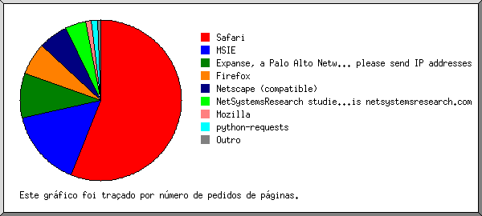
Mostrando os leitores com pelo menos 1 pedido de uma página, ordenados por número de pedidos de páginas.
| no. | N.ped | Pgs. | Leitor |
|---|---|---|---|
| 1 | 434 | 63 | Safari |
| 434 | 63 | Safari/537 | |
| 2 | 18 | 18 | MSIE |
| 15 | 15 | MSIE/9 | |
| 2 | 2 | MSIE/7 | |
| 1 | 1 | MSIE/8 | |
| 3 | 12 | 12 | Expanse, a Palo Alto Networks company, searches across the global IPv4 space multiple times per day to identify customers' presences on the Internet. If you would like to be excluded from our scans, please send IP addresses |
| 12 | 12 | Expanse, a Palo Alto Networks company, searches across the global IPv4 space multiple times per day to identify customers' presences on the Internet. If you would like to be excluded from our scans, please send IP addresses/domains | |
| 4 | 65 | 10 | Firefox |
| 3 | 3 | Firefox/57 | |
| 2 | 2 | Firefox/82 | |
| 55 | 1 | Firefox/89 | |
| 1 | 1 | Firefox/64 | |
| 1 | 1 | Firefox/58 | |
| 2 | 1 | Firefox/59 | |
| 1 | 1 | Firefox/7 | |
| 5 | 23 | 6 | Netscape (compatible) |
| 6 | 4 | 4 | NetSystemsResearch studies the availability of various services across the internet. Our website is netsystemsresearch.com |
| 7 | 2 | 2 | Mozilla |
| 8 | 2 | 1 | python-requests |
| 2 | 1 | python-requests/2 | |
| 43 | 0 | [não listados: 2 Leitores] |
(Ir a: Início | Sumário Geral | Relatório Mensal | Resumo Diário | Resumo Horário | Relatório de Domínios | Relatório de organizações | Relatório de referência redireccionada | Relatório de referência falhada | Relatório do sítio de referência | Relatório de Leitores | Resumo de Leitores | Relatório de Sistemas Operativos | Relatório de Códigos de Estado | Relatório de Tamanho de Ficheiro | Relatório de Tipos de Ficheiro | Relatório de Directorias | Relatório de Pedidos)
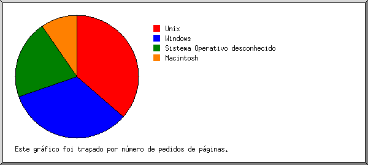
Mostrando os Sistemas Operativos, ordenados por número de pedidos de páginas.
| no. | N.ped | Pgs. | Sistema Operativo |
|---|---|---|---|
| 1 | 405 | 47 | Unix |
| 405 | 47 | Linux | |
| 2 | 75 | 33 | Windows |
| 24 | 23 | Windows desconhecido | |
| 48 | 7 | Windows NT | |
| 3 | 3 | Windows XP | |
| 3 | 102 | 23 | Sistema Operativo desconhecido |
| 4 | 21 | 13 | Macintosh |
(Ir a: Início | Sumário Geral | Relatório Mensal | Resumo Diário | Resumo Horário | Relatório de Domínios | Relatório de organizações | Relatório de referência redireccionada | Relatório de referência falhada | Relatório do sítio de referência | Relatório de Leitores | Resumo de Leitores | Relatório de Sistemas Operativos | Relatório de Códigos de Estado | Relatório de Tamanho de Ficheiro | Relatório de Tipos de Ficheiro | Relatório de Directorias | Relatório de Pedidos)
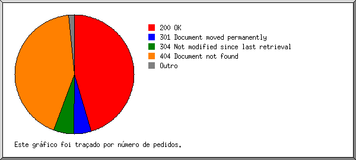
Mostrando os códigos de estado, por ordem numérica.
| N.ped | cod. estado |
|---|---|
| 531 | 200 OK |
| 65 | 301 Document moved permanently |
| 73 | 304 Not modified since last retrieval |
| 433 | 404 Document not found |
| 11 | 405 Method not allowed |
| 10 | 500 Internal server error |
(Ir a: Início | Sumário Geral | Relatório Mensal | Resumo Diário | Resumo Horário | Relatório de Domínios | Relatório de organizações | Relatório de referência redireccionada | Relatório de referência falhada | Relatório do sítio de referência | Relatório de Leitores | Resumo de Leitores | Relatório de Sistemas Operativos | Relatório de Códigos de Estado | Relatório de Tamanho de Ficheiro | Relatório de Tipos de Ficheiro | Relatório de Directorias | Relatório de Pedidos)
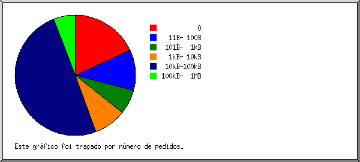
| tamanho | N.ped | %bytes |
|---|---|---|
| 0 | 116 | |
| 1B- 10B | 0 | |
| 11B- 100B | 67 | 0,02% |
| 101B- 1kB | 45 | 0,08% |
| 1kB- 10kB | 55 | 1,76% |
| 10kB-100kB | 283 | 52,79% |
| 100kB- 1MB | 38 | 45,34% |
(Ir a: Início | Sumário Geral | Relatório Mensal | Resumo Diário | Resumo Horário | Relatório de Domínios | Relatório de organizações | Relatório de referência redireccionada | Relatório de referência falhada | Relatório do sítio de referência | Relatório de Leitores | Resumo de Leitores | Relatório de Sistemas Operativos | Relatório de Códigos de Estado | Relatório de Tamanho de Ficheiro | Relatório de Tipos de Ficheiro | Relatório de Directorias | Relatório de Pedidos)
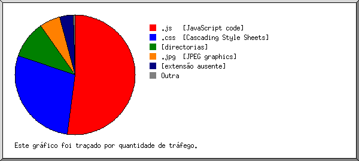
Mostrando as extensões com pelo menos 0,1% do tráfego, ordenadas por quantidade de tráfego.
| N.ped | %bytes | extensão |
|---|---|---|
| 187 | 54,83% | .js [JavaScript code] |
| 81 | 28,37% | .css [Cascading Style Sheets] |
| 117 | 7,40% | [directorias] |
| 34 | 5,52% | .jpg [JPEG graphics] |
| 73 | 3,50% | [extensão ausente] |
| 5 | 0,36% | .php [PHP] |
| 107 | 0,02% | [não listadas: 2 extensões] |
(Ir a: Início | Sumário Geral | Relatório Mensal | Resumo Diário | Resumo Horário | Relatório de Domínios | Relatório de organizações | Relatório de referência redireccionada | Relatório de referência falhada | Relatório do sítio de referência | Relatório de Leitores | Resumo de Leitores | Relatório de Sistemas Operativos | Relatório de Códigos de Estado | Relatório de Tamanho de Ficheiro | Relatório de Tipos de Ficheiro | Relatório de Directorias | Relatório de Pedidos)
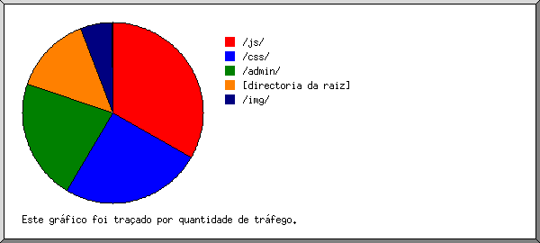
Mostrando as directorias com pelo menos 0,01% do tráfego, ordenadas por quantidade de tráfego.
| N.ped | %bytes | directoria |
|---|---|---|
| 167 | 34,37% | /js/ |
| 73 | 25,02% | /css/ |
| 28 | 23,81% | /admin/ |
| 255 | 11,15% | [directoria da raiz] |
| 34 | 5,52% | /img/ |
| 4 | 0,12% | /painel/ |
| 43 | 0,02% | /.well-known/ |
(Ir a: Início | Sumário Geral | Relatório Mensal | Resumo Diário | Resumo Horário | Relatório de Domínios | Relatório de organizações | Relatório de referência redireccionada | Relatório de referência falhada | Relatório do sítio de referência | Relatório de Leitores | Resumo de Leitores | Relatório de Sistemas Operativos | Relatório de Códigos de Estado | Relatório de Tamanho de Ficheiro | Relatório de Tipos de Ficheiro | Relatório de Directorias | Relatório de Pedidos)
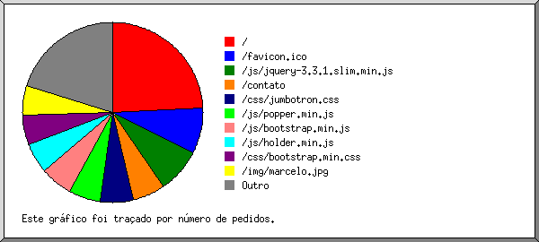
Mostrando os ficheiros com pelo menos 20 pedidos, ordenados por número de pedidos.
| N.ped | %bytes | hora ant. | ficheiro |
|---|---|---|---|
| 117 | 7,40% | 30/Jun/21 14:56 | / |
| 54 | 16,87% | 30/Jun/21 19:27 | /js/jquery-3.3.1.slim.min.js |
| 49 | 29/Jun/21 18:24 | /favicon.ico | |
| 38 | 3,47% | 30/Jun/21 19:27 | /js/popper.min.js |
| 38 | 0,02% | 30/Jun/21 19:27 | /css/jumbotron.css |
| 38 | 8,71% | 30/Jun/21 19:27 | /js/bootstrap.min.js |
| 37 | 5,32% | 30/Jun/21 19:27 | /js/holder.min.js |
| 36 | 1,37% | 23/Jun/21 08:57 | /contato |
| 35 | 25,00% | 30/Jun/21 19:27 | /css/bootstrap.min.css |
| 34 | 5,52% | 26/Jun/21 22:29 | /img/marcelo.jpg |
| 128 | 26,32% | 30/Jun/21 12:30 | [não listados: 32 ficheiros] |